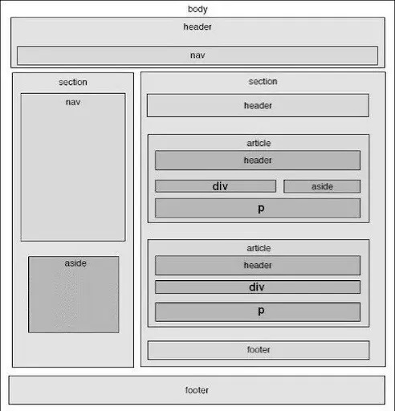
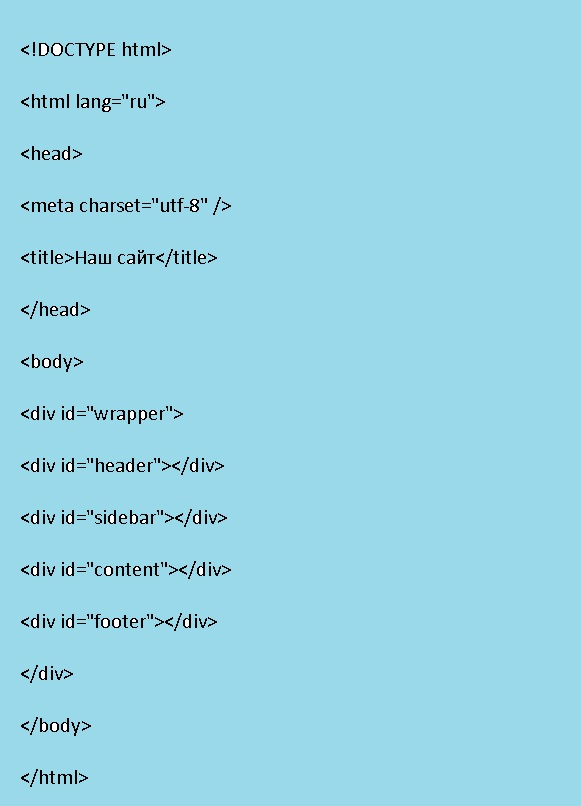

Что такое вёрстка сайта
Верстка – это перенос дизайна из макета на страницу так, чтобы ничего из изначального (макетного) отображения сайта стояло на своем месте и не потерялось в процессе. Версткой ее называют потому, что процесс очень похож на верстание газетной страницы: вы имеете перед собой чистый лист и с помощью различных инструментов создаете колонки, размещаете текст и картинки, выбираете шрифт и так далее.
Естественно, перед правильной версткой страницы стоит
больше вызовов, чем перед адекватной версткой
газетного листа.
Все дело в интерактивности – когда верстальщик размечает газетный лист, ему не нужно заботиться о том, что газетный лист может уменьшиться в 2 раза или что читатель захочет открыть интерактивное меню газеты, чтобы перейти к предпоследнему листу. А вот если верстальщик осуществляет разработку сайтов, то он должен со всеми этими вызовами бороться: создавать адаптивный дизайн для разных экранов, задавать адекватное поведение интерактивных элементов (ссылок, меню, кнопок и так далее), прописывать реакции на действия пользователя (с учетом ситуаций, которые следует избегать). Добавьте сюда и оптимизацию – если скорость открытия газетного листа зависит от ловкости рук читающего, то скорость открытия веб-страницы зависит от размера всех файлов на странице – и некоторые из них могут весить очень много, с чем вам тоже придется бороться. В общем, процесс создания сайтов с точки зрения верстальщика – это балансировка между идеальной версткой и адекватными сроками выполнения, что, в общем-то, справедливо для любой сферы разработки.
Естественно, решить все эти задачи без конкретных инструментов не получится.
Основной стэк: HTML, CSS, JavaScript, Photoshop.
- HTML – это язык разметки, с помощью HTML-тэгов вы говорите браузеру, что вот в этом вот месте должен располагаться вот этот вот элемент.
- CSS – это язык описания внешнего вида документов, файлы стилей CSS говорят браузеру, что вот этот вот элемент (описанный HTML-тэгом) должен иметь такой-то фон, такой-то шрифт и так далее.
- JS – это полноценный язык программирования, изначально предназначенный для браузеров. JS с помощью DOM-модели (специальная модель для описания элементов страницы) получает доступ к элементу страницы или стилю, после чего что-то с ним делает. При этом изменять параметры можно на ходу, то есть вы, например, можете сделать анимацию из векторной графики или впихнуть плашку «СКИДКА 99%» на весь экран, если пользователь дошел до середины страницы. JS может на лету подгружать данные с сервера, и пользователь будет видеть, как товар, который он просматривает сейчас, активно покупают другие пользователи. В общем, у JS – масса применений.
- Photoshop – программа для редактирования растровой графики. Верстальщику она нужна для того, чтобы взять готовый макет и декомпозировать его на атомарные составляющие: размеры блоков, цвета, шрифты и так далее. Качественную верстку создают очень кропотливо, то есть вам придется перенести каждый кусочек верстки из макета в страницу вручную.
То, что мы описали выше, может показаться очень сложным, но не пугайтесь –
все становится намного
проще, если вы используете готовые подходы.
В рамках основных подходов можно прибегнуть к одному из трех вариантов: вы можете делать табличную верстку (устарела), обычную блочную верстку (устаревает), адаптивную верстку (процветает). Об этих видах мы расскажем чуть ниже. Есть еще и фреймворки, но это – сложная тема, ее мы вкратце коснемся в конце.
HTML
Начать стоит именно с HTML, поскольку правила отображения страницы задает именно он – таблицы стилей и JS задаются после. HTML-разметка задается с помощью тэгов – вам нужно последовательно перечислить все элементы на странице. Если нужно – никто не запрещает вам класть тэги в тэги. Основные тэги:
Сначала вам нужно создать скелет страницы:
Стили и скрипты нужно подключать в head, в body вы размещаете блоки div и контент страницы.
Виды вёрстки
Теперь – о подходах к CSS-верстке. Есть 3 основных – табличная, блочная, адаптивная.
Табличная
Самый древний вид верстки. Во времена зарождения интернета ни CSS, ни тэга div еще не было, и создателям страниц приходилось выкручиваться доступными методами. Самым лучшим вариантом было создание одной огромной таблицы на странице, после чего в эту таблицу размещали шапку, подвал, текст, картинки и прочие элементы страницы.
Табличная верстка не требует CSS. Сейчас она используется только в учебных примерах, потому что контролировать отображение и создавать human-friendly верстку табличным способом крайне сложно (а адекватную резиновую верстку создать и вовсе невозможно).
Блочная
Блочная верстка основывается на тегах div и span. Сначала вы создаете все нужные блоки и правильно их располагаете, затем в CSS задаете размеры ширины блоков, после чего размещаете контент.
Преимущество этого подхода – в его гибкости. Такая верстка сайта соответствует требованиям любых браузеров, и в можете быстро задать конкретные размеры и расположение любого блока – достаточно поменять один параметр в CSS.
Адаптивная
У предыдущего варианта верстки есть всего одна проблема: если вы делали верстку на компьютере, то она будет некорректно отображаться на мобильных устройствах, потому что у них меньше ширина экрана. Проблему решает гибкая/адаптивная верстка – верстка, которая автоматически подстраивается под размеры экрана.
Адаптивная верстка – это дальнейшее развитие блочной верстки. Идея – в том, что вы задаете блокам не фиксированную ширину, а ширину в процентах и диапазонах от ширины экрана. Если блоку явно не хватает размера – он перемещается под мешающийся блок или размещается над ним. Если вы умеете писать на JS – вы можете сделать так, чтобы блок при определенных разрешениях экрана вообще начинал отображаться как-то иначе (это можно сделать и через CSS, но – сложнее).
Верстка по шагам
Здесь мы кратко пройдемся по всем шагам создания верстки. Если вам нужны знания более глубокие, чем предоставлены здесь – смотрите курсы ниже.
Шаг 1. Поиск шаблона
Для начала вам нужно найти готовый шаблон, который вы будете переносить на страницу. Поискать можно здесь:
Кроме того, вам нужно будет купить/скачать Adobe Photoshop, чтобы получить доступ к слоям шаблона.
Шаг 2. Создаем структуру страницы
Еще один подготовительный шаг. Вам нужно найти хостинг и создать на нем основные файлы/папки. Если нет желания тратиться на хостинг – можете установить WAMP Server, но придется помучаться с его настройкой. В корневой папке (www) вам нужно создать index.html, папку css, файл styles.css внутри папки css и папку images. Index.html – основная страница сайта, в папке css будут храниться стили, в папке images – изображения.
Шаг 3. Создаем структуру страницы
Вам нужно прикинуть (или нарисовать) размещение основных блоков и содержимое этих блоков. После этого можете описывать всю эту структуру в HTML:
Как видите, в теле создается общий div, внутри которого лежат различные блоки. У каждого блока – свой id, чтобы мы могли обращаться к блокам в CSS.
Шаг 4. Нарезаем макет на картинки
Откройте макет в Photoshop, найдите все сложные картинки (те, которые не являются одноцветными прямоугольниками) и сохраните их в формате .jpg, после чего – залейте на хостинг, в папку images.
Шаг 5. Собираем все воедино
Самый большой и сложный шаг – вам нужно воссоздать макет на каркасе с помощью сохраненных картинок и CSS-стилей. Помните, что цвет можно взять в Photoshop пипеткой, шрифт можно узнать в свойствах текста.
Шаг 6. Тестируем
Правила валидной верстки требуют, чтобы все теги были на месте и закрытыми при необходимости, а стили не конфликтовали друг с другом. Поскольку процесс создания кода на CSS – дело кропотливое, избежать ошибок практически невозможно. Чтобы найти и исправить их, можно проверить валидность кода через специальные сервисы, про которые мы расскажем ниже.
Советы для быстрой вёрстки
5 короткий советов, который упростят вам жизнь:
- Приучите себя закрывать тэги. Отыскать незакрытый div бывает очень непросто, а верстка едет сразу. Приучите себя перепроверять закрытость тэгов.
- Найдите DocType. В самом начале страницы нужно указывать тип документа – большая строка с множеством параметров. Doctype практически всегда одинаковый, поэтому сохраните его себе где-нибудь и копируйте-вставляйте при необходимости.
- Избегайте описания стилей в HTML. Возможно вы уже знаете, что стили можно описывать и внутри HTML. Ни в коем случае этого не делайте – такие стили имеют более высокий приоритет, чем CSS, и если вы забудете, что прописывали его, то будете очень долго отлавливать ошибку.
- Держите включения в одном месте. Все подключенные CSS-файлы держите строго в шапке, чтобы не искать их по всему документу.
- Пользуйтесь отладчиком. В любой современный браузер встроен отладчик, который позволяет получить информацию об элементе и предупреждает об ошибках. Обычно вызывается кнопкой F12. Пользуйтесь им регулярно.
Признаки правильной и неправильной вёрстки
Инструменты верстальщика
Про основные инструменты мы уже рассказали. Здесь – вкратце о фреймворках и методологиях. Фреймворк – это одновременно и набор инструментов, и каркас, и философия. Фреймворк построен таким образом, чтобы вы взяли его, подключили, настроили под себя – и получили готовый результат. В случае с CSS это означает, что вы подключаете к странице готовый css-файл, переопределяете нужные вам классы – и все магическим образом начинает работать. На маленьких проектах вполне можно обойтись без фреймворка, на больших проектах без фреймворков никуда. Самый простой вариант – фреймворк Bootstrap. Взять его и посмотреть на примеры использования можно здесь: https://getbootstrap.com/.
Методология, в отличие от фреймворка, не дает вам готовых инструментов (и не ограничивает вас в этом), но дает вам методы построения архитектуры вашей верстки. Ознакомьтесь с БЭМ, разработанном в Яндексе: https://ru.bem.info/.
Проверка вёрстки
Инструменты для проверки валидности кода, соответствия макету и так далее:
- Pixel Perfect. Позволяет получить попиксельную картину страницы, чтобы сравнивать ее с макетом.
- Валидатор Проверяет ваш код на ошибки и соответствие стандартам.
- Проверка скорости загрузки Смотрит, насколько быстро загружается ваша страница.
- Проверка по регионамЕще одна проверка скорости, но вы можете указать регион, с которого будут заходить ваши потенциальные клиенты. Удобно тестировать геолокацию серверов.
Что почитать по теме
Подведем итоги
Тезисно:
- Верстка – это перенос шаблона на страницу в первозданном виде.
- Основные инструменты верстальщика – HTML, CSS, JavaScript, Photoshop.
- На данный момент доминирует адаптивная верстка.
- Шаги верстки: поиск шаблона, создание файловой структуры, создание каркаса HTML, вырезание картинок из макета, непосредственно верстка (перенос дизайна), тестирование.
- В серьезных проектах используются дополнительные инструменты – фреймворки и методологии.
- Не забудьте прогнать свою страницу через валидатор и сервис тестирования скорости.